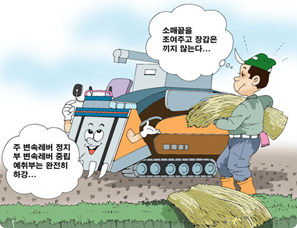
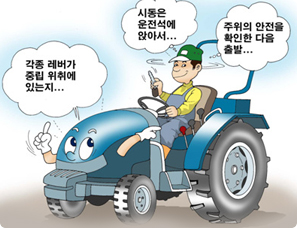
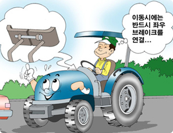

농기계안전
농작업자 및 고용주는 농작업 안전에 관한 교육 및 홍보활동 등에 적극적으로 참가하여 안전의식을 높이고,
도로교통법 등 관계법령을 숙지하시기 바랍니다.
작업 전

- 긴급 시 정지 방법의 주지
- 긴급상황에 대비하여 작업기의 동력 차단 방법, 엔진의 정지 방법을 가족이나
작업자 모두가 알아 두도록 한다.
- 적절한 복장, 보호구의 착용 등
- 옷 단, 소맷자락이 조여진 작업복을 착용하고 필요에 따라 헬멧, 장갑, 안전화,
보호안경, 귀마개 기타 보호구를 착용한다.
- 수건을 허리에 감거나 또는 목이나 머리에 두르지 않도록 한다.
- 트랙터에 말려 들어갈 우려가 있는 작업을 할 때에는 장갑을 착용하지 않는다.
- 몸 상태
- 몸 상태가 나쁠 때는 가급적 농업기계를 운전하지 않으며, 피로를 느낄 때에는 충분한 휴식을 취한다.
- 기후
- 악천후일 때는 사고의 위험이 높으므로 무리하여 작업하지 않는다.
- 점검, 정비
- 트랙터의 정비 불량은 중대한 사고를 초래할 우려가 있으므로 운전하기 전에는 반드시 점검 정비를 하는 습관을 가지도록 한다.
또한 이상이 있는 경우에는 정비할 때까지 사용하지 않는다.
운전조작


- 트랙터에서 타고 내림
- 항상 승차용 계단과 손잡이를 이용하여 탑승한다.
- 트랙터의 왼쪽에서 타고 내리도록 한다.
- 트랙터가 움직이고 있는 도중에 타거나 내리지 않는다.
- 원칙적으로 트랙터를 등지고 타거나 내리지 않는다. 발을 헛디디지 않도록 주의한다.
- 발판이나 발바닥의 진흙은 수시로 제거한다.
- 전도, 추락의 우려가 있으므로 뛰어올라 타거나 내리지 않는다.
- 궤도식 트랙터의 경우 미끄러질 우려가 있으므로 궤도를 발로 딛고 타고 내리지 않는다.
- 운전석 주변
- 핸들, 의자, 거울 등의 조절은 트랙터가 안전하게 세워 놓고 운전석에 바른 자세로 앉아
조절장치를 작동하면서 적당히 조절한다.
- 의자의 위치는 모든 조절장치를 어려움 없이 작동할 수 있도록 조절한다.
- 거울은 바로 맞추어져 있는지 확인하고, 거울과 창은 깨끗하게 하며 충분한
시야를 확보할 수 있는지 확인해야 한다.
- 페달을 밟을 때 방해가 되어 사고의 위험이 있으므로 운전석 바닥에 공구,
draw-bar pin, top link 등을 두지 말아야 한다.
- 운전석에는 운전자 1명만 탑승해야 하며, 운전석 옆이나 트레일러 등에 사람을 태우지 않는다.
- 엔진 시동, 출발
- 교육훈련을 받지 않은 상태에서는 절대로 트랙터를 운전하지 말아야 하며 작동 전에는 각각의
조절장치의 기능과 역할에 대해 충분히 알아두어야 한다.
- 엔진의 시동은 반드시 운전석에 앉아서 각종 조작레버가 중립 위치에 있는지,
주차브레이크가 걸려 있는지를 확인한 다음 주위를 잘 살피고 공동 작업자 등이 있을 경우에는
신호를 보낸 후 시동을 건다.
- 운전 전에는 브레이크, 조향핸들 그리고 다른 장치의 점검도 해야 하며, 운전은 주위의
안전을 확인한 후 좌석에 앉아서 천천히 출발한다.
- 이동 주행
- 트랙터를 안전하게 작동시키려면 반드시 안전 운전자가 되어야 한다. 매번 출발할 때마다 위험요인이
없는지 확인하고, 무엇보다도 다른 사람이나 차량들을 잘 살펴야 하며 과속하지 말아야 한다.
- 주행 시에는 한눈을 팔거나 손을 놓고 운전을 하지 않는다. 장비들이나 짐, 또는 날씨로 인해
운전 시야가 좁아질 수 있다는 것을 명심하고 사각지대를 잘 살펴야 한다.
- 경고 표지판을 잘 살펴 주의하고, 시야 확보가 안 될 경우 특히, 후진을 할 때는 거울과 경적을
활용하여 필요시에는 도움을 청하도록 한다.
- 트랙터를 급출발, 급선회, 급정지 시키지 않는다. 요철이 심한 노면을 주행할 때는 속도를 낮춘다.
특히, 작업기 장착이나 물품 적재에 의해 무게중심이 높아지거나 뒤로 쏠릴 때가 있으므로 주의한다.
- 무거운 작업기를 후방에 장착하고 주행할 경우에는 전륜에 걸리는 하중이 감소하여 조향하기
힘들어지고 심하면 앞바퀴가 들리기도 하므로 속도를 낮추어 주행하고, 필요에 따라 앞쪽에
밸런스 웨이트를 장착하도록 한다.
- 좌우 독립 브레이크를 부착한 트랙터에서는 주행하거나 언덕이나 논둑을 넘을 때에는
좌우 브레이크 페달을 연결하여 일체로 작동하도록 한다.
- 본체와 작업기의 폭이나 높이의 차이에 주의하고 방제기의 붐, 광폭써레 등 폭이 넓은 것은
접는다. 또한, 장착해야 할 방호커버 등을 장착한다.
- 지면의 높이차가 있는 포장으로 출입하거나 논두렁을 타고 넘을 때에는 전도될 우려가 있으므로
직각으로 하며, 높이 차가 큰 경우에는 디딤판을 사용한다.
- 언덕을 내려올 때 클러치를 끊거나 변속을 중립으로 하여 타성(惰性)으로 주행하지 않는다.
- 주차는 가급적 평탄지를 선택하여 하고 승강부를 낮추고, 엔진을 정지시킨 뒤 주차 브레이크를
걸고 키를 빼둔다. 어쩔 수 없이 경사지에 트랙터를 주차할 때는 돌 등을 바퀴 밑에 궤어 놓는다.
또한 타기 쉬운 볏짚이나 마른 풀 위에 트랙터를 세워 두지 않는다.
- 궤도식 트랙터의 경우에는 차륜식과는 선회반경, 선회 중심 위치가 차륜식과는 다르므로
충분히 주의하여 회전한다. 또한 요철을 넘을 때는 갑자기 기체가 흔들리는 일이 있기 때문에
반드시 저속으로 진행한다.
- 동승자의 위험성
- 트랙터에 운전자 이외의 사람이 탑승했을 경우
- 트랙터에 운전자 외에 동승한 사람이 있을 경우에는 주행 시, 급정지 및 회전시 또는 트랙터가
전복되면서 떨어지거나
밖으로 튕겨져 나가는 사고가 발생할 수 있으므로 가급적 운전자 외에는
동승하지 않도록 한다.
- 트랙터는 승용차가 아니다. 동승자는 운전자의 집중력을 흐트러뜨릴 수 있고 각종 레버를 조작하는데
어려움을 주며 운전자의 시야를 방해하기도 한다.
- 안전프레임이 장착된 트랙터의 경우 운전자는 안전벨트를 매게 되면 심각한 부상으로부터
보호받을 수 있으나 동승자에게는 어떠한 안전장치도 마련되어 있지 않음을 명심해야 한다.
※ 표 40 트랙터의 속도별 정지시간 및 제동거리
| 속도(km/h) |
2m 도달시간(초) |
정지시간(초) |
제동거리(m) |
| 8 |
0.90 |
1.6 |
3.7 |
| 16 |
0.45 |
3.2 |
9.1 |
| 24 |
0.30 |
4.8 |
14.6 |
| 32 |
0.23 |
6.4 |
19.5 |
| 40 |
0.18 |
8.0 |
25.6 |
| 48 |
0.15 |
9.6 |
33.8 |
- 도로주행 시
- 작업등을 소등하고 좌우 독립 브레이크를 가진 트랙터는 좌우의 브레이크페달을 연결한 후
주행해야 하며, 또한 교통법규를 준수하여 주행한다.
- 일반 자동차와의 속도 차이가 사고로 이어지는 경우가 많기 때문에 야광 반사마크 등으로
눈에 띄기 쉽도록 하고, 기체폭도 반사마크나 야간 반사테이프를 부착하는 등으로
상대 운전자가 쉽게 알아볼 수 있도록 한다.
- 견인할 경우 트레일러나 피견인차의 연동 브레이크의 작동을 확인한다.
노견을 주행하지 않는다. 어쩔 수 없이 노견을 주행할 경우에는 연약한 지반인지를 충분히 확인한다.
- 농로에서 차도로 진입시에는 시야를 충분히 확보한 후 진입하여야 하고 선회시에는
방향지시등을 반드시 작동시켜 추돌 및 충돌사고 예방에 주의를 기울인다.
- 연료 보급
- 연료를 보급할 때는 화재의 우려가 있으므로 엔진을 정지시킨 다음 엔진이 식은 후 보급한다.
급유 중에는 화기를 가까이하지 말고 트랙터에서 떠나지 않는다.
연료캡은 확실하게 잠그고 흘러나온 연료는 깨끗이 닦는다.
- 트랙터의 운반
- 트럭 등으로 트랙터를 하차, 운반할 때에는 전도, 추락의 위험성이 있으므로 주의한다.
- 준비
- 운반용 차량은 주차 브레이크를 걸고 돌을 괴는 등 움직이지 않도록 한다.
- 디딤판은 충분한 폭과 강도가 있어야 하고, 미끄럼 방지 처리가 되어있는 것으로 경사각이 15도
이하가 되도록 한다. 또한 디딤판의 길이는 화물칸 높이의 4배 이상인 것을 사용한다. 디딤판의
후크는 운반용 차량의 화물칸에 확실하게 걸쳐 고정한다.
- 하차
- 안전한 하차를 위하여 유도자와 유도 방법을 정한 후에 작업한다. 유도자는 트랙터의 진행경로
상에 위치하거나 트랙터에 너무 접근하지 않도록 한다.
- 작업 후에는 부착 작업기의 상태를 고려하여 전후진 어느 쪽이든 적절한 방향으로 가급적
저속으로 이동하고 디딤판 위에서는 조향, 클러치 조작, 변속 조작을 절대 하지 않는다.
- 궤도식인 경우에는 운반용 차량의 화물칸과 디딤판의 이음새를 넘을 때는 갑자기 기체가
흔들릴 수 있으므로 주의한다.
- 운반 경로에 높이 제한이 있을 때는 그 이하가 되는지 확인한다.
- 운반 시
운반시에는 운반용 차량의 급출발, 급정지, 급선회 등을 피한다.
- 작업기의 착탈
- 트랙터에 작업기를 탈 부착할 때 사고가 일어나기 쉽다. 올바른 부착 장치 및 방법을 사용하여
사고를 예방하여야 한다.
- 작업기를 올바르지 못한 방법으로 연결하는 경우 트랙터가 불안정해질 수 있다.
트랙터의 drawbar는 트랙터의 무게중심을 고려하여 끌어당길 수 있도록 설계된 것으로 드로우바
이외의 다른 지점을 잡아끌거나 연결하는 경우 전복될 위험성이 있다.
- 사전에 트랙터 PTO축과 작업기의 회전 방향, 적정한 회전속도를 확인하여 작업자가 말려
들어가거나 트랙터가 파손되는 것을 방지한다.
- 작업기의 착탈은 평탄하고 충분한 강도를 가진 단단한 바닥 위에서 충분한 공간을 가진 여유가
있는 장소에서 착탈한다. 작업기에 스탠드가 부착되어 있는 경우에는 반드시 스탠드를 사용하여
트랙터를 안정시킨 후 착탈한다.
- 착탈할 때는 작업기와 본체 사이나 작업기 아래에 신체 부분을 넣지 말아야 한다.
또한 draw-bar 밑이나 근처에 서있지 말고, draw-bar 위쪽이나 트랙터 뒤쪽에
절대 사람을 태우지 말아야 한다.
- 다른 사람의 도움을 받을 경우에는 의사소통을 명확히 하여야 한다.
- PTO 유니버셜죠인트는 적당한 길이의 것을 사용하고 연결은 확실하게 하며, 핀이 빠지지
않도록 고정함과 동시에 안전커버도 확실하게 고정한다. 작업기의 유압호스는 바르게 조합하고
확실하게 접속시켜 조작이 안되거나 파손되지 않도록 주의한다.
- 견인시에는 전도될 우려가 있으므로 전용 견인 히치를 이용하며 절대로 차축이나 탑링크
등으로 견인하지 않는다.
- 작업기 착탈 시에 떼어놓은 안전커버는 반드시 장착한다.
- 기체의 무게 밸런스를 잡기 위하여, 적절한 밸런스 웨이트를 부착한다. 밸런스 웨이트는
무거우므로 요통이 생기지 않도록 주의하여 취급한다.
- 옷 등이 말려 들어갈 우려가 있으므로 PTO를 사용하지 않을 때는 PTO축의 안전커버를 씌워 둔다.
작업 중

- 기본
- 보조 작업자와 함께 농작업을 할 때는 트랙터의 출발, 작업기 동력의 연결 및 끊음은
보조 작업자에게 신호하여 안전을 확인한 후 한다. 또 보조 작업자의 체격 및 체력을 고려하여
작업 부담이 과중되지 않도록 작업 속도 등을 조절한다.
- 트랙터에서 떠날 때에는 작업기를 내리고 엔진을 정지시킨 다음 주차브레이크를 걸고 키를 뽑아둔다.
- 작업기마다 특유의 작업 방법, 작업 수행을 위한 적정 작물조건 등을 습득해 둔다.
또한 작업기의 형태, 무게 및 크기에 따라 무게 밸런스, 조향 성능, 브레이크 성능 등이
변화하는 것을 고려하여 운전한다.
- 전도, 추락 방지
- 트랙터는 반드시 운전석에 앉아서 운전하고 좌석이나 승차위치 이외의 곳에 사람을 태우지 않는다.
작업기에 보조 작업자가 승차할 경우에는 추락방지 가이드나 체인을 친다.
- 밸런스 웨이트 대신 사람을 태우지 않는다.
- 급선회, 급출발, 급정지하지 않는다.
- 트랙터 전도의 우려가 있는 급경사지에서는 가급적 작업하지 않는다. 부득이한 경우에는
작업계획, 작업 방법을 경사지에 맞추어 설정하고 항상 주의하며 작업을 실시한다.
- 배속턴 등 전륜증속기구는 고속 주행 시나 경사지에서 선회할 때에는 사용하지 않는다.
또, 프런트 로더 장착 시에도 사용하지 않는다.
- 중량물을 들어 올릴 때에는 기체가 동요하여 전도될 우려가 있으므로 비스듬히
들어올리지 말고 주행 및 선회는 저속으로 한다.
- 충돌, 낌, 말림 방지
- 트랙터가 이동하는 통로에 기체나 안전캡.프레임에 접촉되는 장애물이 없는지 확인한다.
또한 비닐하우스 등의 시설 내에서 작업할 때는 충돌이나 낄 우려가 있으므로
배관, 지주, 유인 와이어 등의 장애물에 주의한다.
- 여러 트랙터가 조를 이루어 작업을 할 경우에는 미리 신호를 정하여
협조해 가면서 작업할 수 있도록 한다.
- 수확물 등을 운반차로 옮길 때는 충돌이나 사람이 끼지 않도록 주의하면서 한다.
- 작업기나 적재된 화물에 의해 주위가 잘 안 보일 경우에는 유도자를 정하여 그 유도에 따른다.
- 작업기에 이물질이 말려 있거나 막힌 것을 제거할 때에는 트랙터의 엔진을 정지하고
작업부의 정지를 확인한 후에 제거한다. 또한, 유압식 승강부를 장시간 올리고 있을 때에는
반드시 버팀목 등을 이용해 작업기가 내려오지 않도록 한다.
- 탈곡기 등은 막힘에 주의하고 무리하게 투입하지 않는다. 또한 비산물이나 배출물 퇴적에 의한
배출구의 막힘에도 주의한다.
- 배출가스 중독 방지
- 비닐하우스 등 실내에서는 엔진 배출가스에 의한 일산화탄소 중독의 우려가 있으므로 환기가
충분히 이루어지도록 하면서 작업을 한다.
- 작업기의 이용
- 견인식 작업기
- 작업기를 견인하여 커브를 돌 때에는 충분히 주의하면서 운전한다. 후진을 할 때에는 역핸들이
되기 때문에 신중하게 조작한다.
- 언덕을 내려올 때에는 브레이크의 제동력이 떨어지기 때문에 엔진브레이크를 병행하여 사용한다.
또한, 잭나이프현상이 일어날 우려가 있으므로 급제동 및 급선회를 하지 않는다.
- 포장 내에서 작업할 때에는 작업 전에 트랙터가 여유 있게 선회할 수 있도록 침지를 만든다.
- 로더가 부착된 경우 전도될 위험이 있으므로 주행 중 또는 급경사지에서는 로더의 조작을 가급적
하지 않는다. 트레일러 아래에서의 점검 정비는 적재된 짐의 낙하방지 장치를 고정한 후에 한다.
- 사료용 옥수수 및 목초 등을 수확 시에 하베스타와 웨곤의 조합 등 다연식인 경우에는
운전이 복잡해지므로 충분히 주의하여 운전한다.
- 후방 직장식 작업기
- 운전자가 후방으로 하는 작업이 익숙하지 않기 때문에 충분히 주의하면서 작업하고,
목이나 허리에 무리가 되기 쉬우므로 자주 휴식을 취한다.
- 측방 옵셋 작업기
- 경사지에서 등고선 방향으로 작업할 경우에는 가급적 옵셋측을 산 쪽으로 하여 작업한다.
- 전방 장착식 작업기
- 전륜의 공기압은 전륜하중에 맞는 압력으로 조정한다.
- 전방시계를 충분히 확보하고 주변상황에 주의하면서 작업한다.
- 프런트 로더가 장착된 트랙터
- 버킷으로 무거운 화물을 들어 올리거나 떠받치고 있는 경우, 뒷바퀴의 무게가 앞바퀴에 실려서
트랙터의 균형을 떨어뜨릴 수 있어 트랙터의 안정성이 다소간 떨어지게 되므로 안전프레임을
장착하는 것이 안전하다.
- 경사면에서 로더 버킷이 위로 향해 있는 경우에는 트랙터가 앞쪽으로 밀려나갈 가능성이 꽤
높고, 좁은 공간에서 버켓을 위로 올리는 경우 사고의 위험성이 매우 높으므로 주의한다.
- 트랙터가 경사면에 있는 경우에는 변속기어를 주차 상태나 후진 상태로 두는 것이 안전하다.
- 프런트 로더가 달린 트랙터는 반드시 버킷을 내린 상태에서 저속으로 주행하여야 한다.
- 주행시에는 울퉁불퉁한 지대는 피하고, 구릉지대에서 적재한 상태일 때는 일자로 곧바로
내려가거나 올라가도록 한다. 특히, 구릉지대에서 운전할 때 버킷이 위로 향해 있는 경우에는
트랙터 무게중심을 위로 이동케 할 수 있는 경사나 구덩이, 그리고 지면의 돌출 부분이나 바퀴로
인해 패인 지형 등을 잘 살펴보고 트랙터를 조작하도록 한다.
- 물건의 적재는 트랙터나 로더의 전복 위험성을 최소화할 수 있는 장소에서 해야 하고,
적재 장소나 창고 건물에는 회전시 필요한 일정 공간이 반드시 확보되어 있어야 한다.
- 자재 등의 취급
- 목초, 퇴비 등은 수분에 의해 비중, 유동성 등의 물리성이 크게 달라진다는 것을 염두에 두고
곤포, 운반 작업을 실시한다.
- 탱크 등에 액체를 넣고 이동할 경우는 무게중심이 수시로 이동하여 트랙터가 불안정해지기
때문에 저속으로 주행한다.
- 안전캡 내 설치된 에어컨에 농약용 필터가 장착되어 있지 않는 경우에는 농약살포할 때 외기를
차단하고 보호구를 착용한 후 작업한다.
- 소음, 진동
- 송풍기를 가진 작업기는 대부분 소음이 크므로 귀마개 등 적절한 보호구를 착용하고 장시간에
걸친 연속 작업은 피한다.
- 논두렁조성기, 진동식 심토파쇄기 등은 진동이 심하므로 가급적 장시간에 걸친 연속 작업은 피한다.
작업 후
- 점검·정비
- 작업 후 점검, 정비는 평탄한 장소에서 주차브레이크를 걸고 엔진을 멈춘 후 가동부가 완전히
정지된 뒤 실시한다. 또한 점검, 정비를 하기 위해 떼어 놓았던 안전커버는
종료 후 반드시 장착한다.
- 승강부를 올려서 점검할 때는 버팀목 등을 이용하여 낙하방지 조치를 취한다.
- 잭업을 할 때는 엔진을 정지시키고 평탄하고 충분한 강도를 가진 바닥 위에서 잭과 트랙터의
안정상태를 확인하면서 한다.
- 배터리, 배선, 소음기, 엔진 주변부는 화재의 우려가 있으므로 항상 청소해 둔다. 또한 소음기나
엔진이 충분히 식은 후 점검 정비한다.
- 배터리 충전 중에는 가연성 가스가 발생되기도 하므로 환기하면서 충전시킨다.
- 뇨 살포기의 탱크를 청소할 때는 탱크 속으로 추락할 우려가 있으므로 사다리를 고정시킨 후 진출입한다.
- 트랙터의 관리
- 운전일지, 점검·정비일지 등을 기록하고 기록에 근거하여 적정하게 관리한다.
- 트랙터의 보관
- 보관창고는 충분히 밝도록 전등을 설치하고, 환기가 잘 되도록 환기창이나 환기팬을 설치하도록 한다.
- 트랙터는 승강부를 내리고 키를 뽑아 보관한다.
- 탑재식이나 견인식 작업기는 보관 시에 기체를 안정시키는 스탠드 등이 부착된 경우에는 반드시 스탠드를 사용한다.
- 트랙터를 대여할 경우
- 트랙터를 대여할 때는 적절하게 정비하고 트랙터의 사용방법, 안전 상의 주의를 충분히 설명하고
취급설명서를 잘 읽은 후 작업할 것을 지시한다.
 [도전 안전벨] 농기계 안전사고 예방 요령
[도전 안전벨] 농기계 안전사고 예방 요령 농기계안전
농기계안전
 농약중독 및
농약중독 및